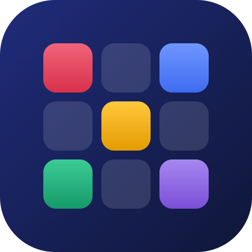

ذهن برتر
هر روز چند دقیقه بازی فکری کوتاه · English
۲۴ بازی کوتاه برای حافظه، تمرکز، کلمه، محاسبه، منطق و تجسم فضایی؛ هر روز ۵ بازی، رشتهی روزها و نقشهی پیشرفت. بدون ثبتنام، به فارسی و انگلیسی، و کاملاً آفلاین.
دانلود
پشتیبانی
سؤال، مشکل یا پیشنهاد داری؟ به Armin.ap1998@gmail.com ایمیل بزن.
سؤالهای رایج
- چطور پیشرفتم رو به گوشی دیگه ببرم؟ توی بخش «پیشرفت»، دکمهی «پشتیبانگیری و بازگردانی» رو بزن، کد رو کپی کن و توی گوشی جدید از همونجا واردش کن.
- چطور زبان رو عوض کنم؟ بخش «پیشرفت»، قسمت تنظیمات، دکمهی زبان.
- یادآور روزانه رو چطور خاموش کنم؟ بالای صفحهی «امروز»، روی «یادآور» بزن.
- شاخص ذهن همون آیکیوئه؟ نه. فقط عملکردت توی بازیهای همین اپ رو نشون میده. پرسشنامهی ADHD هم فقط غربالگریه و تشخیص نیست.
Zehn Bartar
A few minutes of short brain games every day
24 short games for memory, focus, words, math, logic and spatial thinking: five a day, a streak to keep and a skill map that shows your progress. No sign-up, in Persian and English, and fully offline.
Download
Support
Questions, problems or ideas? Email Armin.ap1998@gmail.com.
Common questions
- How do I move my progress to another phone? In Progress, tap "Back up and restore", copy the code and paste it in the same place on the new phone.
- How do I change the language? Progress → Settings → the language button.
- How do I turn off the daily reminder? Tap "Reminder" at the top of the Today screen.
- Is the mind index my IQ? No. It reflects your performance in this app's games only. The ADHD questionnaire is a screener, not a diagnosis.